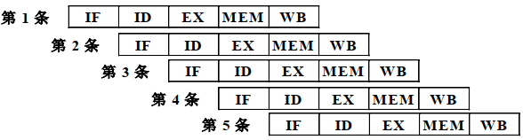
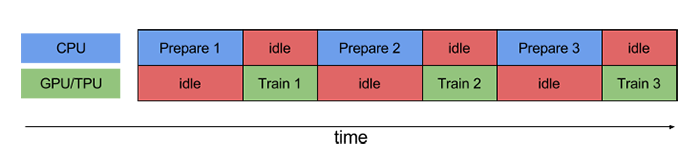
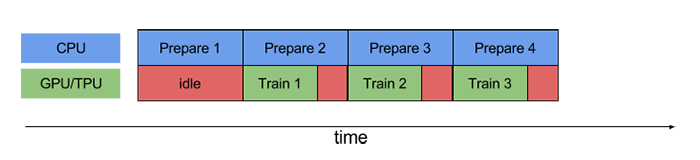
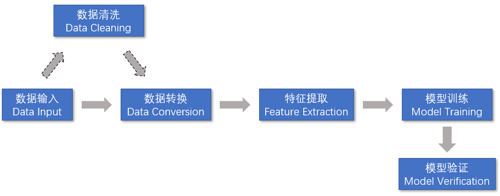
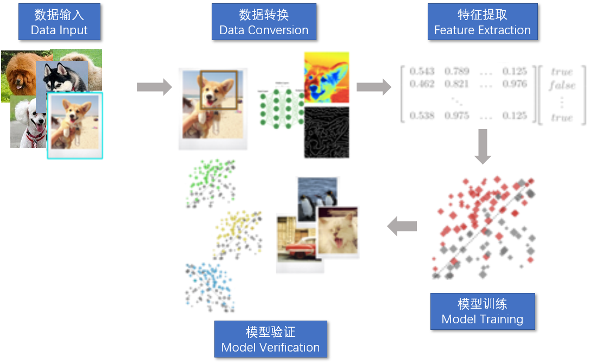
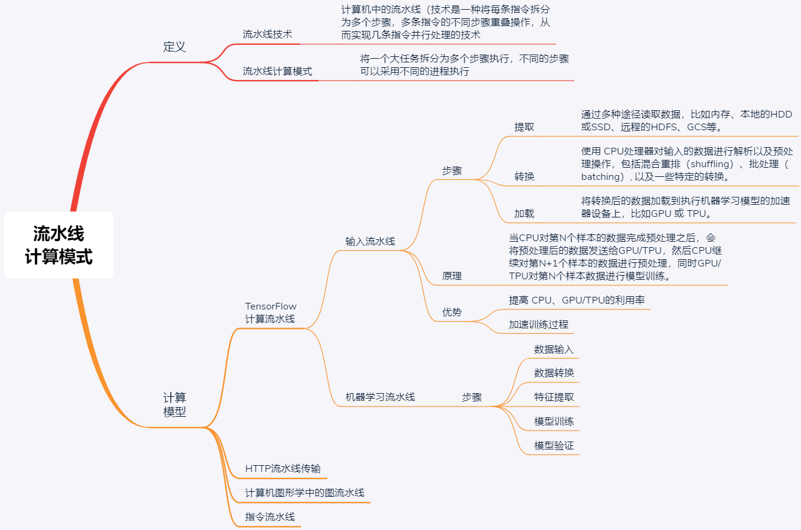

- 00 开篇词 四纵四横，带你透彻理解分布式技术.md.html
- 01 分布式缘何而起：从单兵，到游击队，到集团军.md.html
- 02 分布式系统的指标：啥是分布式的三围.md.html
- 03 分布式互斥：有你没我，有我没你.md.html
- 04 分布式选举：国不可一日无君.md.html
- 05 分布式共识：存异求同.md.html
- 06 分布式事务：All or nothing.md.html
- 07 分布式锁：关键重地，非请勿入.md.html
- 08 分布式技术是如何引爆人工智能的？.md.html
- 09 分布式体系结构之集中式结构：一人在上，万人在下.md.html
- 10 分布式体系结构之非集中式结构：众生平等.md.html
- 11 分布式调度架构之单体调度：物质文明、精神文明一手抓.md.html
- 12 分布式调度架构之两层调度：物质文明、精神文明两手抓.md.html
- 13 分布式调度架构之共享状态调度：物质文明、精神文明多手协商抓.md.html
- 14 答疑篇：分布式事务与分布式锁相关问题.md.html
- 15 分布式计算模式之MR：一门同流合污的艺术.md.html
- 16 分布式计算模式之Stream：一门背锅的艺术.md.html
- 17 分布式计算模式之Actor：一门甩锅的艺术.md.html
- 18 分布式计算模式之流水线：你方唱罢我登场.md.html
- 19 分布式通信之远程调用：我是你的千里眼.md.html
- 20 分布式通信之发布订阅：送货上门.md.html
- 21 分布式通信之消息队列：货物自取.md.html
- 22 答疑篇：分布式体系架构与分布式计算相关问题.md.html
- 23 CAP理论：这顶帽子我不想要.md.html
- 24 分布式数据存储系统之三要素：顾客、导购与货架.md.html
- 25 数据分布方式之哈希与一致性哈希：“掐指一算”与“掐指两算”的事.md.html
- 26 分布式数据复制技术：分身有术.md.html
- 27 分布式数据之缓存技术：“身手钥钱”随身带.md.html
- 28 分布式高可靠之负载均衡：不患寡，而患不均.md.html
- 29 分布式高可靠之流量控制：大禹治水，在疏不在堵.md.html
- 30 分布式高可用之故障隔离：当断不断，反受其乱.md.html
- 31 分布式高可用之故障恢复：知错能改，善莫大焉.md.html
- 32 答疑篇：如何判断并解决网络分区问题？.md.html
- 33 知识串联：以购买火车票的流程串联分布式核心技术.md.html
- 34 搭建一个分布式实验环境：纸上得来终觉浅，绝知此事要躬行.md.html
- 特别放送 Jackey：寄语天涯客，轻寒底用愁.md.html
- 特别放送 分布式下的一致性杂谈.md.html
- 特别放送 崔新：追根溯源，拨开云雾见青天.md.html
- 特别放送 徐志强：学习这件事儿，不到长城非好汉.md.html
- 特别放送 那些你不能错过的分布式系统论文.md.html
- 结束语 为什么说提升职业竞争力要从尊重、诚实开始？.md.html
- 捐赠
18 分布式计算模式之流水线：你方唱罢我登场
你好，我是聂鹏程。今天，我来继续带你打卡分布式核心技术。
通过前面几篇文章，我们一起学习了分布式计算模式中的MapReduce、Stream和Actor，它们各显神通解决了很多实际问题。
但是，在现实生活中，经常还会出现这样的情况，前一个任务的结果是另外一个任务的输入。比如工厂生产一瓶饮料，首先需要往瓶子里装上饮料，待饮料装满后，再封口。如果装饮料和封口分别为子任务，那么前一个任务（装饮料）结束后才可以开始第二个任务（封口）。类似这样的作业，就是我们常说的流水线作业。
在分布式领域中解决类似具有依赖关系的流水线作业的计算模式，叫作流水线计算模式。其实，流水线计算模式是我们在第1篇文章中提到的数据并行计算的一种形式，就是将一个任务拆分为多个步骤（子任务），然后多个这样的任务通过对步骤（子任务）的重叠执行，以实现数据并行处理的场景。
这种流水线模式在计算机领域中最先用于CPU指令设计，后来推广到机器学习领域进行数据处理、模型训练等。在流水线计算模式中，由于前一个子任务执行后，会扔给下一个子任务，由下一个子任务去展现自己的能力，因此可以形象地比喻为“你方唱罢我登场”。
接下来，我们就一起打卡分布式计算模式中的流水线模式吧。
什么是流水线模式？
其实，分布式领域的流水线计算模式，就是参考了工业生产中的流水作业模式，将一个任务分为多个步骤执行，使得不同任务可以并行执行。此外，你肯定还会想到计算机技术中的流水线计算吧。
计算机中的流水线（Pipeline）技术是一种将每条指令拆分为多个步骤，多条指令的不同步骤重叠操作，从而实现几条指令并行处理的技术。现代CPU指令采用了流水线设计，将一条CPU指令分为取指（IF）、译码（ID）、执行（EX）、访存（MEM）、回写（WB）五级流水线来执行。
如下图所示，在第一条指令执行译码操作时，第二条指令就可以执行取指操作了，从而实现了多条指令的并行操作。

在分布式领域中，流水线计算模式也类似，它是将一个大任务拆分为多个步骤执行，不同的步骤可以采用不同的进程执行。这，使得不同任务可以并行执行，从而提高了系统效率。
以机器学习中的数据预处理为例，假设现在有5个样本数据，每个样本数据进行数据预处理的流程，包括数据去重、数据缺失值处理、数据归一化3个步骤，且需要按照顺序执行。也就是说，数据预处理这个任务可拆分为数据去重—>数据缺失值处理—>数据归一化3个子任务。
如果现在有3个节点，节点1执行数据去重，节点2执行数据缺失值处理，节点3执行数据归一化。那么，节点1处理完样本1的数据，将处理后的数据发送节点2后，则节点1可以继续处理样本2的数据，同时节点2处理样本1的数据，以此类推，就实现了多任务的并行执行。
接下来，我们再具体看看分布式领域中的流水线计算模式吧。
流水线计算模式
流水线计算模式的应用非常广泛，在AI技术中也非常常见。对流水线计算模式的学习，将有助于你学习AI技术，因此我接下来会以机器学习为例，为你介绍流水线计算模式。
当然，流水线计算模式的原理是通用的，也可以应用到其他领域，比如通信领域中使用HTTP流水线传输、计算机图形学中的图流水线等。
随着神经网络、深度学习在全世界掀起了All in AI的热潮，用于加速的GPU和TPU也被越来越多的人使用。虽然诸如GPU、TPU之类的加速器可以从根本上减少执行单个训练步骤所需的时间，但为了达到最佳性能，我们仍然需要高效的输入流水线机制。
比如，在流水线模式中数据预处理与GPU/TPU进行模型训练可以重叠进行；再比如，第N个样本进行模型训练时，第N+1个样本可以进行数据预处理，也就是说在第N+1个样本进行预处理前，已经将第N个样本处理后的数据提供给了模型训练，进一步减少了整体的数据处理和模型训练时间。
Tensorflow是Google开源的一个分布式机器学习框架，已被各大公司采用，比如网易、eBay、Intel等公司。接下来，我就以TensorFlow的输入流水线模式为例，与你介绍流水线技术模式的原理，并带你了解如何构建机器学习的流水线。
流水线计算模式的原理
TensorFlow运用了流水线模式对输入数据进行预处理，因此称为输入流水线（TensorFlow Training Input Pipelines）。其数据输入流水线主要包含3个步骤：
- 提取（Extract）。通过多种途径读取数据，比如内存、本地的HDD或SSD、远程的HDFS、GCS等。数据的种类也有很多，比如图像数据、文本数据、视频数据等。
- 转换（Transform）。使用 CPU处理器对输入的数据进行解析以及预处理操作，包括混合重排（shuffling）、批处理（batching）, 以及一些特定的转换。比如图像解压缩和扩充、文本矢量化、视频时序采样等。
- 加载（Load）。将转换后的数据加载到执行机器学习模型的加速器设备上，比如GPU 或 TPU。
由于输入流水线包含了提取、转换、加载3个步骤，因此TensorFlow的数据输入流水线也称为ETL流水线。TensorFlow提供了一个官方API也就是tf.data，利用简单、可重用的数据片段构建复杂的输入流水线。
没错，在加速模型训练方面，输入流水线是非常重要的一个模块。由上述流程可知，要执行训练步骤，首先需要提取并使用CPU转换数据，然后将其提供给在加速器上运行的模型。
如果不引入流水线模型的话，当 CPU 正在预处理数据时，加速器处于空闲状态。同样，当GPU/TPU正在训练模型时，CPU 处于空闲状态。因此，训练的用时是 CPU 预处理时间和加速器训练时间的总和。
为了帮助你理解，我们一起看下TensorFlow官网给出的一个示例吧。这个例子展示了一个不使用流水线技术和使用流水线技术时，CPU、GPU/TPU的训练过程对比。
我们先看看不使用流水线技术的训练过程。如下图所示，Prepare 1表示CPU正在对第1个样本数据进行预处理操作，Train 1表示GPU/TPU正在训练第1个样本数据。

备注：图片来源为www.tensorflow.org/guide。
图中的“idle”指的是空闲时间。可以看出，如果不使用流水线，CPU 和 GPU/TPU 运作的时间没有重叠，因此在大部分时间都可能处于空闲状态。
接下来，我们再看看使用流水线技术的训练过程。流水线模型可以将训练步骤的数据预处理和数据训练过程重叠到一起。比如，当GPU/TPU正在训练第 N 个样本数据时，CPU 可以预处理第 N+1 个样本数据。这样做不仅可以最大限度地缩短训练的单步用时，还可以缩短提取和转换数据所需的时间，如下图所示：

很明显，采用流水线的设计可以充分利用CPU和GPU/TPU，从而避免资源闲置，加速训练过程。
到这里，我们来小结一下吧。
TensorFlow的输入流水线模式将对数据的操作拆分为提取、转换、加载3个不重叠的部分。当CPU对第N个样本的数据完成预处理之后，会将预处理后的数据发送给GPU/TPU，然后CPU继续对第N+1个样本的数据进行预处理，同时GPU/TPU对第N个样本数据进行模型训练。也就是说，这种计算模式实现了多样本数据处理和模型训练的并行执行。
可以看出，在模型训练中引入流水线模式，可以提高 CPU、GPU/TPU的利用率，还可以加速训练过程。
实践: 构建机器学习流水线
前面提到在TensorFlow中，流水线模式主要运用在数据读取阶段。那么，对于一个复杂的机器学习任务，是否也可以构建一套流水线作业呢？
答案是肯定的。接下来，我们就一起看看，如何构建机器学习流水线。
一个典型的机器学习训练模型按照流水线计算模式拆分，可以包括如下所示的5个步骤：
- 数据输入，指的是从不同的数据源中导入数据。
- 数据转换，主要是要把输入的无结构数据转换成合适的格式，以便特征提取。
- 特征提取，指的是从数据集中提取特征数据。
- 模型训练，包括提供一个算法，并提供一些训练数据让模型可以学习。学习算法会从训练数据中发现模型，并生成输出模型。
- 模型验证，指的是通过训练得到的结果，对模型进行错误率验证。比如，图像分类中分类结果的验证，预测中的准确度验证，从而提高模型的准确性。

值得注意的是，在数据输入和数据转换之间，有时需要进行数据清洗。数据清洗主要是剔除错误数据和不重要的数据，从而降低模型训练的错误率。
接下来，我以图像分类为例，带你了解机器学习流水线的流程。关于图像分类的详细知识点，你可以自行查阅相关资料。
如下图所示，假如现在有10000张小狗照片，需要训练出一个关于小狗的预测模型。

假设这10000张照片中，8000张作为训练集，2000张作为测试集，采用CNN进行模型训练。CNN包括输入层、卷积层、池化层、全连接层，其中输入层为数据输入，卷积层和池化层为特征提取，全连接层是连接所有特征，输出数据到分类器中，以得到训练结果。
如上图所示，生成小狗预测模型的流水线可以分为数据输入、数据转换、特征提取、模型训练、模型验证5部分。具体流程如下：
- 输入数据，也就是输入图像数据，即8000张图片，其中图像以像素表示。比如，图片的大小是480_480，那么图像输入数据格式可以是480_480*3的数组。3代表的是，RGB的维度。
- 数据转换，也就是对输入的图像数据进行解析、正则化处理，消除一些噪声数据，得到格式化的数据。
- 特征提取，指的是得到格式化的数据之后，就可以对输入图像进行特征提取，通过卷积操作提取小狗的一些轮廓特征，比如耳朵、尾巴、身体等，然后通过池化层识别出主要特征，比如小狗的耳朵、眼睛、舌头等，对特征进行精简。
- 模型训练。在CNN中模型训练其实和特征提取是相辅相成的，也就是特征提取后，实现特征提取的那些参数就是模型参数，而训练过程，会根据梯度下降法等对参数进行调整，以使得在模型验证阶段预测结果逼近真实结果。也就是说，特征提取和模型训练这两步，在CNN中是放到一起的，这里我为了方便你理解，才显式地把这两步划分了出来。
- 模型验证。将带有标签的测试数据集的图像（2000张）输入到小狗预测模型，将预测结果与实际结果进行对比，如果误差比较大，则对模型参数进行优化并进入下一次迭代训练；如果误差较小，那么得到的结果就是最终的小狗预测模型。
知识扩展：流水线模式和MapReduce模式中，都有将大任务拆分为多个子任务，两者的区别是什么？
如题目所述，流水线计算模式与分而治之的MapReduce计算模式（你可以再回顾下第15篇文章中的相关知识点）有相似之处，都是将一个完整的、大的任务进行划分，但它们划分的模式不一样：
- MapReduce以任务为粒度，将大的任务划分成多个小任务，每个任务都需要执行完整的、相同的步骤，同一任务能被并行执行，可以说是任务并行的一种计算模式；
- 而流水线计算模式以步骤为粒度，一个任务拆分为多个步骤，每个步骤执行的是不同的逻辑，多个同类型任务通过步骤重叠以实现不同任务的并行计算，可说是数据并行的一种模式。
此外，它们的子任务（步骤）间的关系不同：
- 在MapReduce中，各个子任务可以独立执行，互不干扰，多个子任务执行完后，进行结果合并得到整个任务的结果，因此要求子任务之间是没有依赖关系的；
- 而在流水线模式中，多个子任务之间是具有依赖关系的，前一个子任务的输出是后一个子任务的输入。
所以，综合来讲，MapReduce计算模式适合任务并行的场景，而流水线计算模式适合同类型任务数据并行处理的场景。
总结
首先，我与你介绍了什么是分布式计算模式中的流水线模式。它参考了工业生产中的流水作业模式，将一个任务分为多个步骤执行，不同任务之间的步骤可以重叠执行，这使得多个不同任务可以并行执行。
然后，我以典型的机器学习流程为例，介绍了机器学习流水线处理流程，以加深你对分布式流水线计算模型的理解。
最后，我以CNN进行小狗分类模型训练为例，通过讲述数据输入、数据处理、特征提取（卷积、池化等操作）、模型训练、模型验证等过程，带你进一步理解了流水线计算模式在实际应用中的原理。
现在，我再通过一张思维导图来归纳一下今天的核心知识点吧。

流水线计算模式适合同类型任务，且每个任务可以拆分为多个步骤（子任务）进行执行的场景，通过重叠执行多个不同任务间的不同步骤实现数据并行。在实际应用场景中，有很多例子，最常见的就是机器学习。相信你在理解了本文的计算原理之后，一定可以将这种研究方法运用在你的工作中，加油！
思考题
流水线计算模式和流计算的区别是什么？
我是聂鹏程，感谢你的收听，欢迎你在评论区给我留言分享你的观点，也欢迎你把这篇文章分享给更多的朋友一起阅读。我们下期再会！
© 2019 - 2023 Liangliang Lee. Powered by gin and hexo-theme-book.